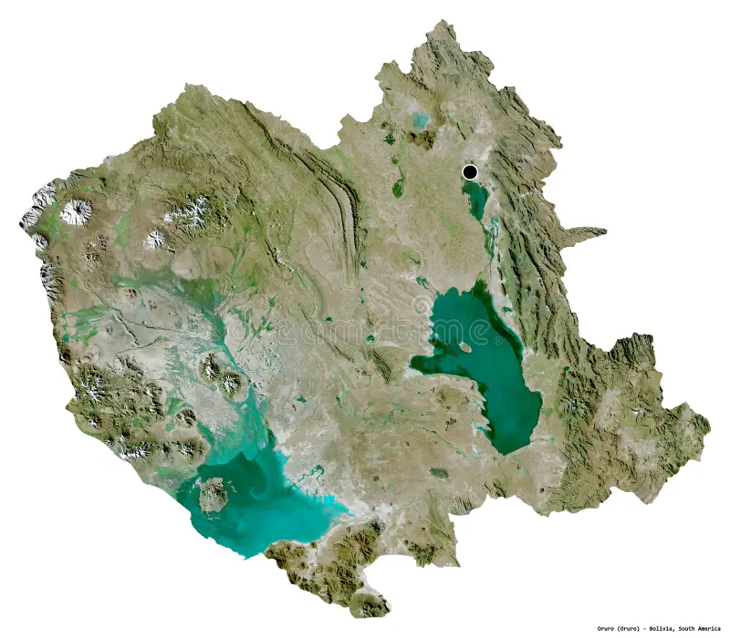

UNIVERSIDAD TÉCNICA DE ORURO
FACULTAD NACIONAL DE INGENIERÍA
CARRERA DE INGENIERÍA INFORMÁTICA
SISTEMAS DE INFORMACIÓN GEOGRÁFICA - INF 3920 A
DETERMINACIÓN DE ZONAS APTAS PARA ENERGÍA SOLAR FOTOVOLTAICA EN ORURO
Análisis Espacial Multicriterio (AHP) aplicado en Sistemas de Información Geográfica para la identificación de áreas con potencial de desarrollo fotovoltaico.
Acerca del Proyecto
El departamento de Oruro posee uno de los mayores potenciales solares de Bolivia gracias a sus elevados niveles de irradiación y condiciones climáticas favorables para la generación de energía fotovoltaica.
Este proyecto tiene como objetivo identificar las zonas más aptas para la implementación de plantas solares fotovoltaicas mediante técnicas de Análisis Espacial Multicriterio (AHP) integradas en un entorno de Sistemas de Información Geográfica (SIG).
La metodología combina diferentes variables geográficas y territoriales que influyen en la viabilidad técnica de un proyecto energético, permitiendo generar un mapa de aptitud territorial que facilite la toma de decisiones y la planificación energética sostenible.
Variables Analizadas
Radiación Solar
Niveles de irradiación disponibles para la generación fotovoltaica.
Pendiente
Condiciones topográficas adecuadas para la instalación de paneles solares.
Líneas Eléctricas
Proximidad a la red eléctrica para facilitar la conexión al sistema.
Carreteras
Accesibilidad para transporte, operación y mantenimiento.
Comunidades
Consideración de centros poblados y áreas de influencia social.
Áreas Protegidas
Restricciones ambientales y territoriales para la preservación ecológica.
Resultado Final
Generación de un mapa de zonas óptimas para la implementación de energía solar fotovoltaica en el departamento de Oruro mediante análisis espacial multicriterio.
Contexto Territorial

Universidad Técnica de Oruro
Facultad Nacional de Ingeniería
Carrera de Ingeniería Informática
Sistemas de Información Geográfica - INF 3920 A